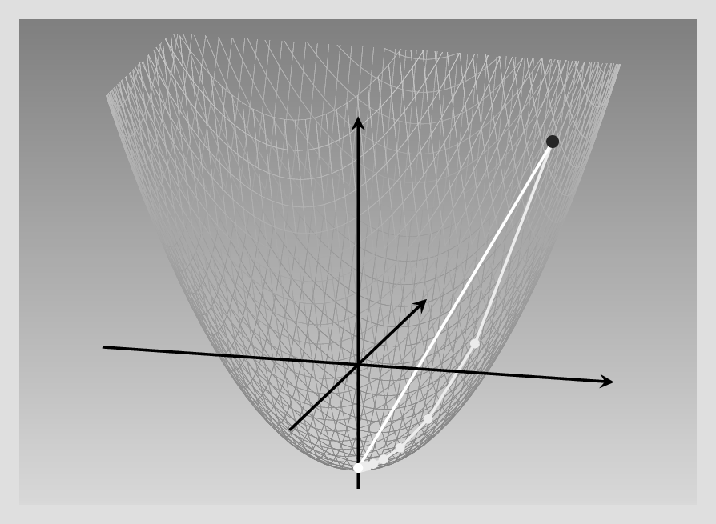
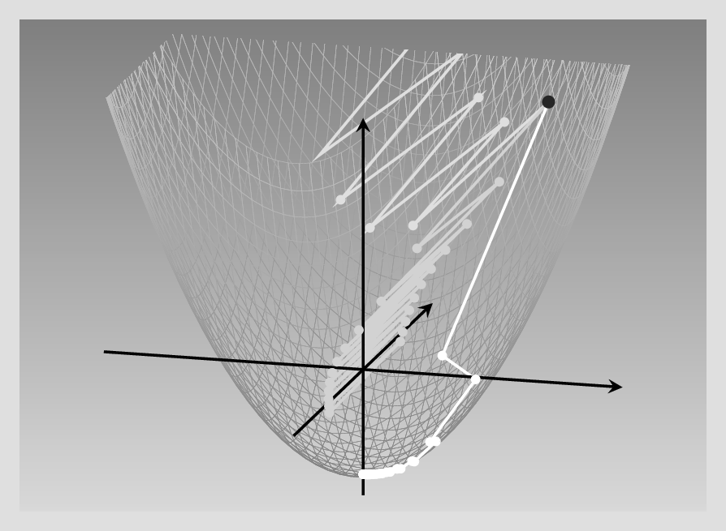
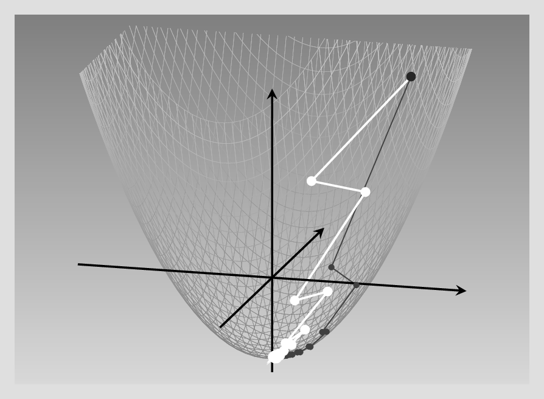
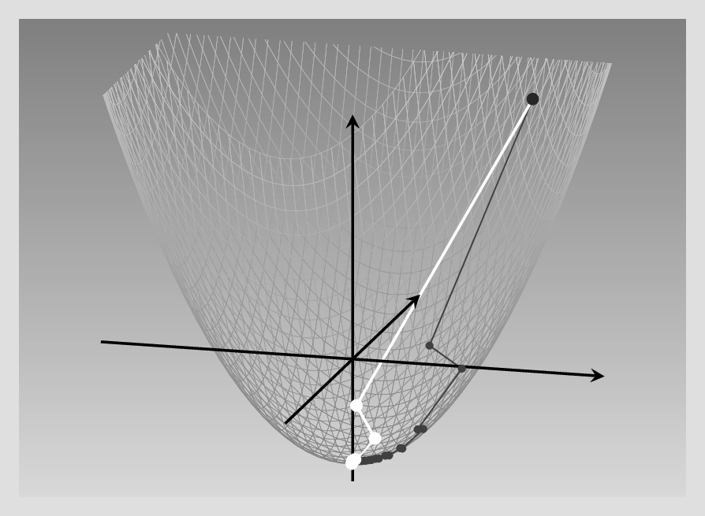
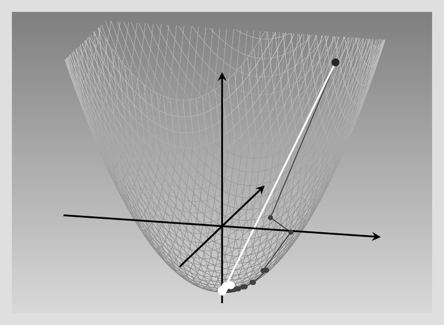
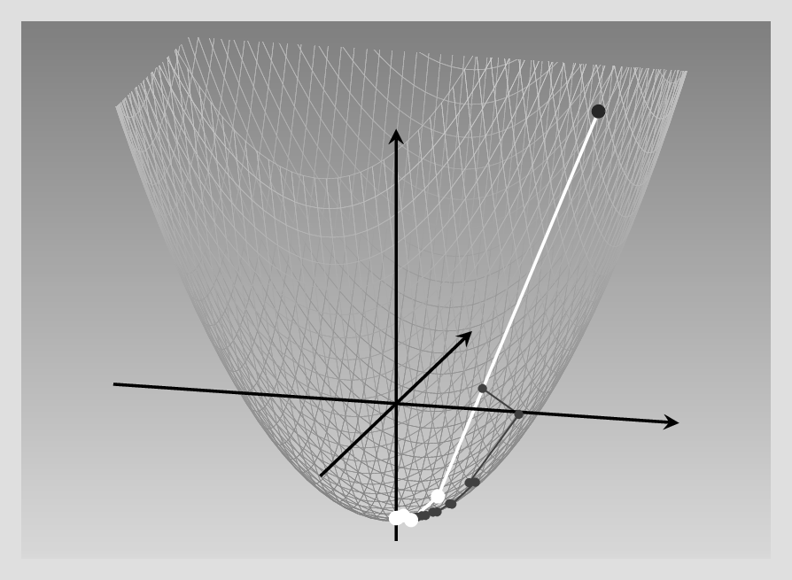

library(torch)
l <- nn_linear(10, 2)
opt <- optim_sgd(l$parameters, lr = 0.1)8 最適化器
これまで、テンソルや、自動微分、モジュールについて詳しく学んできた。 この章では、torchにある主要な概念の締めくくりである最適化手法につして調べる。 モジュールは層とモデルの計算手順をカプセル化するが、最適化手法は最適化手法を包容する。
なぜ最適化オブジェクトがとても便利なのか考えるところから始めよう。
8.1 何のための最適化器か
この質問には、主に二つの答えがある。 一つは技術的なものだ。 最初のニューラルネットワークのコードをどのように書いたか思い出すと、次のように進めていたことが分かる。
- 予測（順伝播）を計算し、
- 損失を算出し、
- autograd を使って（
loss$backward()を呼びだし）偏微分を計算して、 - パラメタを更新するため、勾配の一定の割合をそれぞれ引く。
最後の部分を再掲する。
library(torch)
# requires_grad = TRUEがついた
# 全てのテンソルに関して損失の勾配を計算
loss$backward()
### -------- 重みを更新 --------
# この部分は自動勾配計算に記録したくないので、
# `with_no_grad()`で包む。
with_no_grad({
w1 = w1$sub_(learning_rate * w1$grad)
w2 = w2$sub_(learning_rate * w2$grad)
b1 = b1$sub_(learning_rate * b1$grad)
b2 = b2$sub_(learning_rate * b2$grad)
# 毎回勾配を0にする。
# さもないと積み上がってしまう。
w1$grad$zero_()
w2$grad$zero_()
b1$grad$zero_()
b2$grad$zero_()
})この例は小さなネットワークだったが、このような計算手順を数十、数百層を持つ構造についてコードを書かなければならないとしたら大変だ。 当然、それは深層学習フレームワークの開発者がユーザにしてほしいことではない。 だから、重みの更新は専用のオブジェクト、当該の最適化器が担当する。
つまり、技術面の答えは使い勝手と利便性に関係する。 しかし、他のことも関係している。 以上の方法では、良好な学習率は試行錯誤により決めるしかない。 そしておそらく、最適な学習率が訓練過程を通じて一定であることもない。 ありがたいことに、これまでのたくさんの研究で確立した更新方法がいくつも存在する。 これらの方法は、通常演算の間の状態に依存する。 これが、torchにおいて最適化器がモジュールのようにオブジェクトである、もう一つの理由だ。
これらの方法を詳しく見る前に、手動の重み更新過程を最適化器を使った版に置き換える方法を示す。
8.2 torch組込最適化器の利用
最適化器は何を最適化するか知る必要がある。 ニューラルネットワークの文脈では、それはネットワークのパラメタである。 とは言っても、「モデルのモジュール」と「層のモジュール」に実質的な差はないので、どのように動作するかをnn_linearのような単一の組込モジュールで説明する。
まず勾配降下最適化器をある線型モジュールのパラメタに対して働くように作る。
いつも必要であるを最適化対象のテンソルへの参照に加えて、optim_sgd()は一つだけ任意でないパラメタ学習率lrがある。
一度最適化器オブジェクトを作れば、パラメタの更新はstep()を呼び出すことで実行される。 でも変わってないことが一つある。 訓練の反復に亙って勾配が積み上がらないようにしなければならない。 つまり、zero_grad()を呼び出す必要があるが、今度は最適化器オブジェクトに対して呼べばよい。
以下に示す完全なコードは、上述の手動の手順を置き換えたものだ。
# requires_grad = TRUEがついた
# 全てのテンソルに関して損失の勾配を計算
# ここは変化なし
loss$bacward()
# 依然逆伝播の前に勾配を0にする必要がある。
# 今度は最適化器オブジェクトに対してする。
optimizer$zero_grad()
# 最適化器を使ってモデルパラメタを更新
optimizer$step使いやすくなったことは納得してもらえると思う。 これはすごい改善だ。 ここで、元の質問「何のための最適化器か」に戻り、二つ目の手法面での答えについてもっと議論する。
8.3 パラメタの更新手法
よい学習率を試行錯誤で探すのは大変だ。 それに学習率だけがはっきりしないものではない。 学習率が指定するのは、歩幅の大きさだけだ。 だが、それだけが未解決の問題ではない。
これまで、勾配が与える最急降下方向が最良の方向だと仮定してきた。 それはいつも正しいわけではない。 そのため、パラメタ更新の大きさと方向の両方とも不明ということになる。
ありがたいことに、ここ十年間でニューラルネットワークにおける重みの更新に関する研究が大きく進展した。 ここでは、関係する主要な問題について述べ、torchにより提供されている最もよく使われる最適化器のいくつかを位置付ける。
比較対象となる基準は 勾配降下 あるいは 最急降下 で、このアルゴリズムを函数最適化やニューラルネットワークの訓練を手動で実装するときに用いてきた。 簡単にその指導原理をおさらいしよう。
8.3.1 勾配降下法
最急降下や確率的勾配降下法（SGD: stochastic gradient descent）としても知られている。 勾配は偏微分のベクトルで、各入力特徴量に対して一つの要素がある。 これは、関数が最も増加する方向を表す。 その反対方向に進めば、最も速く降下できる。 そうだろうか。
残念ながら、そう簡単ではない。 取り囲む地形、より技術的には最小化したい函数の等値線に依存する。 説明のため、二つの状況を考える。
一つは初めて自動微分を学んだときに出てきたものだ。 その例では二次元の二次函数があった。 そのときは指摘しなかったが、この特定の函数の重要な点は勾配が二つの次元とも同じだった。 そのような条件では、最急降下は最適である。
確認しよう。 函数は\(f(x_1,x_2) = 0.2x_1^2 + 0.2x_2^2-5\)で勾配は\(\begin{bmatrix}0.4\\0.4\end{bmatrix}\)だった。
例えば点\((x_1,x_2) = (6, 6)\)にいるとする。 それぞれの座標軸について、現在の値の0.4倍を引く。 これは学習率1の場合だが、その必要はない。 もし学習率2.5を使えば、一歩で最小に到達できる。 \((x_1,x_2) = (6 - 2.5 * 0.4 * 6, 6 - 2.5 * 0.4 * 6) = (0, 0)\). 次の図を見ると、それぞれの場合に何が起きているか分かる。 
まとめると、このような等方的な函数は二つの方向の分散が等しいので、学習率を正しく決める「だけ」の問題になる。
次に両方の方向の傾きが大きく異なるとどうなるか、これと比較してみる。
今度は\(x_2\)の係数が\(x_1\)の十倍大きく、\(f(x_1,x_2) = 0.2x_1^2 + 2x_2^2 - 5\)である。 つまり\(x_2\)方向に進むと函数値は大きくなるが、\(x_1\)方向にはもっとゆっくり上昇する。 すなわち、勾配降下の間、一つの方向が他の方向よりも大きく進む。
また異なる学習率を使うとどうなるか調べる。 以下では三つの異なる設定を比較する。 最も小さい学習率を使うと、最終的に最小に到達するものの、対称な場合よりもかなり遅い。 わずかに大きな学習率を使うと、ジグザクを繰り返して、より影響の大きい\(x_2\)が正と負の値の間で振動する。 最後に、学習率をもう少しだけ大きくすることは最悪の効果をもたらす。 函数値は発散し、ジグザクに無限大に大きくなる。

これは非常に説得力がある。 二変数だけのよくある函数でも最急降下は万能からは程遠い。 そして深層学習では、損失函数は もっと 質が悪い。 ここがより洗練されたアルゴリズムが必要になるところである。 最適化器に再度登場願う。
8.3.2 問題となること
概念から見ると、最急降下法の主な改良は、駆動の考え方、つまり解こうとしている問題により分類できる。
まず、毎回勾配を再計算する度に、全く新しい方向から始める代わりに、古い方向、技術的には慣性を残したい。 これは上の例で見た非効率なジグザクの防止に役立つはずである。
次に非対称函数の最小化の例では、本当に全ての変数に対して同じ学習率を使わなければならないのか。 明らかに全ての変数が同程度に変化しないことが明らかであるとき、それらを個別に適切な方法で更新したらよいのではないか。
三つ目は、過度に影響が大きい特徴量に対して学習率を下げようとした場合にだけ生じる問題に対する修正で、学習が進み、パラメタが更新されることを確実にしたい。
これらの考慮すべき点は、最適化アルゴリズムの中でいくつかの古典に示されている。
8.3.3 軌道に留まる: 慣性付勾配降下法
慣性付勾配降下法では、勾配を 直接 重みの更新には使用しない。 代わりに、軌道上の粒子として重みの更新を考える。 粒子は進んでいる方向を維持しようとする、物理で言う慣性が働くが、衝突により向きが変化する。 この「衝突」により 現在 の位置での勾配を考慮するように突かれる。 これらの力学から二段階の更新手順が得られる。
以下の式で、記号の選択は物理の類比によるものだ。 \(\mathbf{x}\)は位置で、パラメタ空間で現在いるところ、より簡単には 現在のパラメタ値である。 時間変化は上付添字で表し、\(\mathbf{y}^{(k)}\)は変数\(\mathbf{y}\)の現在時刻\(k\)での状態である。 時刻\(k\)における瞬間速度は勾配\(\mathbf{g}^{(k)}\)で測る。 位置の更新にはこれを直接用いない。 代わりに各反復で、更新された速度は古い速度に慣性パラメタ\(m\)で重み付された値と新たに計算した勾配（学習率で重み付けする）の組み合わせとする。 二段階の最初はこの方法を表している。
\[ \mathbf{v}^{(k+1)} = m\mathbf{v}^{(k)} + lr\mathbf{g}^{(k)} \tag{8.1}\]
二段階目は\(\mathbf{x}\)の更新を「折衷」された速度でする。
\[ \mathbf{x}^{(k+1)} = \mathbf{x}^{(k)} - \mathbf{v}^{(k+1)} \tag{8.2}\]
物理の類比以外にも、有用かもしれないのは、時系列解析で有名な概念だ。 \(m\)と\(lr\)の和が1であるように選べば、結果は 指数函数的加重移動平均 となる。 （この概念の適用は理解の助けにはなるが、実際は\(m\)と\(lr\)との和を1にする必要はない。）
では、非等方的な放物面に戻り、慣性なしとありのSGDを比較しよう。 後者（明るい曲線）では、\(lr = 0.5\)と\(m = 0.1\)を用いた。 SGD（暗い曲線）で学習率は上の「よい値」を用いた。 慣性付SDGはかなり少ない歩数で最小に到達するFigure 8.1。

8.3.4 Adagrad
まだ改善できるだろうか。 用いている例では、一つの特徴量がもう一つよりもかなり速く変化することとが最適化を遅くしている。 異なる学習率をパラメタ毎に使うべきなのは明白だ。 実際、深層学習でよく使われる最適化手法はパラメタ毎に学習率を変えている。 でもどのように決めるのか。
この点にアルゴリズムの違いが現れる。 例えば、Adagradは個々のパラメタの更新をその偏微分の（正確には二乗）積算和で割っている。 ここで、「積算」は最初の反復から積み上げる。 「積算変数」\(s\)の対象とするパラメタ\(i\)、反復回\(k\)の値は、次の式で更新する。
\[ \mathbf{s}_i^{(k)} = \sum_{j=1}^k(g_i^{(j)})^2 \tag{8.3}\]
（ところで、数式が苦手なら読み飛ばして構わない。できるだけ言葉で伝えるようにしているので、基本的な情報を失うことはない。）
ここで、個々の変数に対する更新では、勾配の一部割合を引くのは素の最急降下と同じだが、割合は（大域的な）学習率だけでなく、前述の二乗した偏微分の積算和も用いて決める。 その和が大きければ、つまり訓練中の勾配が大きければ大きいほど、調整は小さくなる。1
\[ x_i^{(k+1)} = x_i^{(k)} - \frac{lr}{\epsilon + \sqrt{s_i^{(k)}}}g_i^{(k)} \tag{8.4}\]
この手法の全体的な効果は、パラメタの勾配が一貫して大きいと影響は抑制される。 ずっと勾配が小さいパラメタが変化すると、十分に考慮される。 このアルゴリズムでは、大域的な学習率\(lr\)の重要性は低い。 現在の例で最もよい結果に対して、非常に大きな学習率3.7を使える（使う必要がある）。 今回も素の勾配降下（灰の曲線）と比較した結果をFigure 8.2に示す。

この例では、Adagradは非常によい性能を示す。 でもニューラルネットワークの訓練では反復をたくさん行う。 その場合、勾配が積算されていくので、実質的な学習率は次第に減少し、行き止まりに達する。
他の方法で学習率を個別、パラメタ毎にできないだろうか。
8.3.5 RMSProp
RMSPropはAdagradの積算勾配の方法を重み付き平均に置き換える。 各点で、「簿記」されたパラメタ毎の変数\(s_i\)は前の値と前の（二乗）勾配の加重平均とする。
\[ s_i^{(k+1)} = \gamma s_i^{(k)} + (1 - \gamma) (g_i^{(k)})^2 \tag{8.5}\]
更新はAdagradと同様にする。
\[ x_i^{(k+1)} = x_i^{(k)} - \frac{lr}{\epsilon + \sqrt{s_i^{(k)}}}g_i^{(k)} \tag{8.6}\]
この方法では、各パラメタは適切な重みが得られ、全体として学習が遅くなることがない。
基準であるSGDとの比較を示すFigure 8.3。

現時点で、RMSPropは次に述べるAdamに次いで深層学習で最もよく使わている手法である。
8.3.6 Adam
Adamはこれまでに見た二つの概念を組み合わせている。 慣性で「軌道」に留まり、パラメタ依存の更新で速く変化するパラメタへの過剰な依存を回避している。 Adamの手順は次の通りである。2
まず、慣性付SGDのように、勾配の指数函数的加重平均を維持する。 ここでは加重係数\(\gamma_v\)は通常0.9に設定される。
\[ v_i^{(k+1)} = \gamma_vv_i^{(k)} + (1 - \gamma_v)g_i^{(k)} \tag{8.7}\]
また、RSMPropのように二乗勾配の指数函数的加重平均を求め、加重係数\(\gamma_s\)は通常0.999を使う。 \[ s_i^{(k+1)} = \gamma_ss_i^{(k)} + (1 - \gamma_s)(g_i^{(k)})^2 \tag{8.8}\]
\[ x_i^{(k+1)} = x_i^{(k)} - \frac{lrv_i^{(k+1)}}{\epsilon + \sqrt{s_i^{(k+1)}}}g_i^{(k)} \tag{8.9}\]
この章の締めくくりに、Adamを同じ例で試してみるFigure 8.4。

次の章で扱う損失函数は、取り上げる最後の構成要素で、回帰ネットワークと最小化の例を書き直し、torchのモジュールと最適化器の恩恵を受ける。